Para solucionar la ecuación diferencial lineal
Propondremos una solución de la siguiente forma
donde 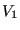, 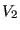, 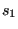, 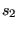 son constantes distintas de cero (no necesariamente números reales, pueden ser números complejos). Dado que ambos términos en (15), son de la forma
con 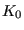 y 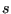 son dos constantes (no necesariamente números reales).
Sustituyendo (16) en
(14) se tiene
Por hipoótesis 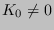 y para todo 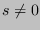 se tiene que 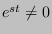; por lo tanto
En esta ecuación, recordemos que los productos 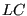 y 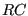 son constantes. Bajo estas condiciones, como es bien sabido, la ecuación (19) tiene dos soluciones, estas pueden ser ambas reales, o bien, ambas complejas; y cuando son complejas, son complejas conjugadas. Ya sea que las raíces de la ecuación (19) sean reales o complejas, si denotamos esas raíces por y , la solución de la ecuación diferencial (14) se puede expresar como se planteó en la expresión (15), es decir, de acuerdo concluimos
Dado que si y son ambas soluciones de (19), entonces,
y también
Al sustituir (20) en el lado izquierdo de (EcuNplus13) se llega a
dado que los términos entre paréntesis son ambos iguales a cero.
2020-05-07